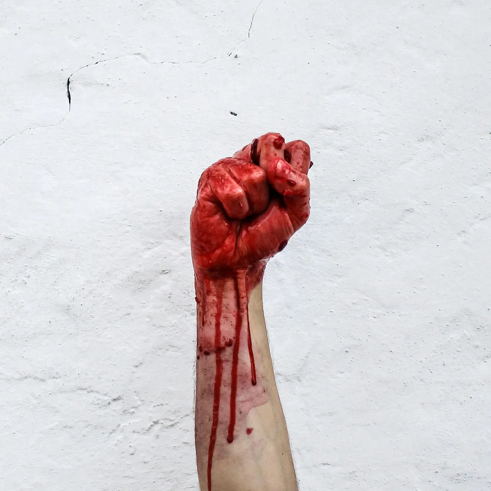

웅장한 홀은 부패의 악취로 가득 차 있었고, 그 냄새는 실밥이 풀린 깃발과 썩어가는 벽걸이에 마치 수의처럼 달라붙어 있었다. 어둠 속에서 힘겹게 깜빡이는 촛불들은 길고 앙상한 그림자를 벽에 드리워 오래 전 죽은 왕들의 얼굴을 찡그린 해골처럼 보이게 했다. 나방이 갉아먹은 벨벳 옷을 걸친 뼈만 남은 모습의 알드릭 왕은 한때 금빛으로 빛났던 왕좌에 힘없이 앉아 있었고, 그의 왕관은 비스듬히 기울어져 살이 썩기 시작한 두피가 드러났다.
[The grand hall reeked of decay, a cloying sweetness that clung to the threadbare banners and rotting tapestries like a shroud. The flickering candles, their flames struggling against the encroaching darkness, cast long, skeletal shadows that danced across the walls, twisting the visages of long-dead kings into grimacing skulls. King Aldric, a skeletal figure draped in moth-eaten velvet, sat slumped upon his once-gilded throne, his crown askew, revealing patches of scalp where the flesh had begun to rot.]
그는 기침을 했고, 젖은 듯 덜컹거리는 소리가 동굴 같은 홀에 울려 퍼졌고, 이미 얼룩진 바닥에 피가 튀었다. 그의 통치는 그의 몸처럼 썩어가고 있었고, 안팎으로 그를 갉아먹는 병에 시달리고 있었다. 그는 강력함과 활력의 이미지를 보여주려는 필사적인 시도로 궁정을 큰 잔치에 불렀지만, 진실은 향수와 썩어가는 위엄 아래 숨겨진 곪아가는 비밀이었다.
[He coughed, a wet, rattling sound that echoed through the cavernous hall, flecks of blood splattering onto the already stained floor. His reign, like his body, was decaying, consumed by a sickness that gnawed at him from the inside out. He had summoned his court for a grand feast, a desperate attempt to project an image of strength and vitality, but the truth was a festering secret hidden beneath layers of perfume and decaying grandeur.]
밖에서는 바람이 고통받는 짐승처럼 울부짖으며 성벽을 할퀴었다. 성 안에는 숨막히는 긴장감과 공포가 짙게 깔려 있었고, 화려한 옷차림의 귀족들에게 제2의 피부처럼 달라붙어 있었다. 그들은 왕의 명령에 따라 왔지만, 그들의 억지로 지은 미소와 공허한 웃음은 눈 속의 불안감을 감출 수 없었다. 알드릭의 건강 악화와 점점 더 불규칙해지는 행동으로 인해 부추겨진 반란의 속삭임은 전염병처럼 왕국 전체에 퍼졌다.
[Outside, the wind howled like a tormented beast, clawing at the castle walls. Inside, the air hung thick with a suffocating tension, a palpable fear that clung to the richly dressed nobles like a second skin. They had come at their king’s behest, but their forced smiles and hollow laughter couldn’t mask the apprehension in their eyes. Whispers of rebellion, fueled by Aldric’s failing health and increasingly erratic behavior, had spread throughout the kingdom like a plague.]
야망으로 가득 찬 깡마른 얼굴을 한 로데릭 경은 테이블의 상석에 서서 약탈자 같은 강렬한 눈빛으로 왕을 응시했다. 그는 알드릭의 권력 장악력이 약해지는 것을 참을성 있게 지켜보며 이 순간을 몇 년 동안 기다려왔다. 그는 왕좌의 맛을, 이마에 왕관의 무게를 느낄 수 있었다.
[Lord Roderick, his face a gaunt mask of ambition, stood at the head of the table, his gaze fixed on the king with a predatory intensity. He had waited years for this moment, patiently watching as Aldric’s grip on power weakened. He could practically taste the throne, feel the weight of the crown upon his brow.]
독이 묻은 단검처럼 날카롭고 위험한 아름다움을 지닌 이스토나 부인은 그의 옆에 앉아 촛불 아래서 반짝이는 보석 목걸이를 만지작거렸다. 그녀는 자신의 야망과 욕망을 가지고 있었고, 알드릭의 약점에서 자신이 갈망하는 권력을 잡을 기회를 보았다.
[Lady Istona, her beauty as sharp and dangerous as a poisoned dagger, sat beside him, her fingers toying with a jeweled necklace that glinted in the candlelight. She had her own ambitions, her own desires, and she saw in Aldric’s weakness an opportunity to seize the power she craved.]
잔치가 시작되었지만, 구운 고기, 윤기 나는 과일, 향긋한 빵 등 풍성한 음식은 아무런 매력도 없었다. 왕에게서 풍겨 나오는 부패의 악취가 공기를 가득 채웠고, 속을 뒤집고 목을 조였다. 손님들은 창백하고 수척한 얼굴로 음식을 조금씩 먹었고, 눈은 시야 가장자리에서 춤추는 그림자를 향해 불안하게 움직였다.
[The feast began, but the opulent spread of roasted meats, glistening fruits, and fragrant breads held no appeal. The stench of decay, emanating from the king himself, permeated the air, turning the stomach and choking the throat. The guests picked at their food, their faces pale and drawn, their eyes darting nervously towards the shadows that danced at the edges of their vision.]
알드릭은 굳은 피처럼 소용돌이치는 와인이 담긴 잔을 들어 올렸다. “왕국을 위하여!” 그는 쉰 목소리로 쇳소리를 내며 말했다. 손님들은 그의 건배를 따라 했지만, 그들의 목소리에는 확신이 없었고, 눈은 두려움과 혐오가 뒤섞여 있었다.
[Aldric raised his goblet, the wine within swirling like congealed blood. “To the kingdom!” he croaked, his voice a rasping whisper. The guests echoed his toast, but their voices lacked conviction, their eyes filled with a mixture of fear and disgust.]
밤이 깊어짐에 따라 분위기는 점점 더 억압적으로 변했다. 촛불은 탁탁 소리를 내며 흔들렸고, 살아있는 것처럼 뻗어나가고 뒤틀리는 기괴한 그림자를 드리웠다. 바람이 밖에서 울부짖었고, 그 슬픈 울음소리는 지옥의 비명처럼 홀에 울려 퍼졌다.
[As the night wore on, the atmosphere grew increasingly oppressive. The candles sputtered and hissed, casting grotesque shadows that stretched and contorted like living things. The wind howled outside, its mournful cries echoing through the hall like the screams of the damned.]
갑자기 소름 끼치는 비명 소리가 공기를 갈랐다. 공포에 질린 얼굴을 한 한 하녀가 왕의 식탁에서 비틀거리며 뒤로 물러섰고, 그녀의 손은 입을 막고 있었다. “그림자!” 그녀는 떨리는 목소리로 숨을 헐떡였다. “움직였어요!”
[Suddenly, a bloodcurdling shriek pierced the air. A serving girl, her face contorted in terror, stumbled back from the king’s table, her hands clasped over her mouth. “The shadows!” she gasped, her voice trembling. “They moved!”]
로데릭 경은 비웃었다. “조용히 해, 계집애! 히스테리를 부리는군.”
[Lord Roderick sneered. “Silence, girl! You’re hysterical.”]
하지만 하녀의 말은 불안의 씨앗을 뿌렸다. 손님들은 자리에서 불편하게 몸을 움직였고, 새롭게 찾아온 불안감으로 그림자를 살폈다.
[But the girl’s words had sown a seed of unease. The guests shifted uncomfortably in their seats, their eyes scanning the shadows with a newfound apprehension.]
질병과 절망으로 감각이 무뎌진 알드릭은 차가운 공포가 그의 마음속으로 스며드는 것을 느꼈다. 그 역시 그림자를 보았다. 그의 시야 주변에 숨어서, 마치 살아있는 것처럼 부자연스럽게 움직이고 꿈틀거리는 그림자를. 그는 그것들을 자신의 열병에 걸린 정신의 산물인 환각으로 여겼지만, 이제는 확신할 수 없었다.
[Aldric, his senses dulled by illness and despair, felt a cold dread creep into his heart. He had seen the shadows too, lurking at the periphery of his vision, shifting and writhing with an unnatural life of their own. He had dismissed them as hallucinations, the product of his fevered mind, but now he wasn’t so sure.]
홀의 문이 삐걱거리며 열렸고, 바람이 불어와 몇 개의 촛불을 꺼뜨리며 방을 거의 어둠 속으로 몰아넣었다. 비명 소리가 터져 나왔고, 손님들이 공포에 질려 뒤로 허둥지둥 물러서며 의자를 긁는 소리와 뒤섞였다.
[The doors to the hall creaked open, a gust of wind extinguishing several candles and plunging the room into near darkness. Screams erupted, mingling with the frantic scraping of chairs as the guests scrambled back in terror.]
어둠 속에서 형체를 알 수 없는 그림자에 싸인 인물이 문턱에 서 있었다. 차가운 공기가 방을 휩쓸었고, 부패의 악취와 희미한 죽음의 속삭임을 가져왔다.
[A figure stood silhouetted in the doorway, cloaked in shadows, its features obscured by the darkness. A wave of icy air washed over the room, carrying with it the stench of decay and the faint whisper of death.]
잔치는 불길한 방향으로 전환되었다. 그림자가 살아났고, 손님들은 탈출구가 없는 악몽에 갇혔다.
[The feast had taken a sinister turn. The shadows had come to life, and the guests were trapped in a nightmare from which there might be no escape.]
문간에 서 있던 인물이 홀 안으로 들어섰고, 깜빡이는 촛불이 그 끔찍한 모습을 드러냈다. 그것은 악몽의 생물이었다. 썩은 살갗과 드러난 뼈가 뒤섞인 육체, 악의적인 빛으로 타오르는 눈. 길고 뾰족한 흉터가 얼굴을 가로질러 있었는데, 그것은 고대의 말할 수 없는 폭력의 증거였다. 그것은 거친 숨을 헐떡였고, 숨을 쉴 때마다 손님들을 질식시키고 공포에 질려 뒤로 비틀거리게 만드는 역겨운 공기가 뿜어져 나왔다.
[The figure in the doorway stepped into the hall, the flickering candlelight revealing its horrifying visage. It was a creature of nightmares, its flesh a patchwork of rotting skin and exposed bone, its eyes burning with a malevolent light. A long, jagged scar ran across its face, a testament to some ancient, unspeakable violence. Its breath came in ragged gasps, each one releasing a cloud of putrid air that choked the guests and sent them reeling back in horror.]
그 생물은 뼈만 남은 손을 들어 올렸고, 손가락 끝에는 희미한 빛 속에서 흑요석처럼 반짝이는 발톱이 달려 있었다. “인간들이여, 안녕.” 지옥의 깊은 곳에서 울부짖는 듯한 목소리로 으르렁거렸다. “나는 잔치를 즐기러 왔다.”
[The creature raised a skeletal hand, its fingers tipped with claws that glinted like obsidian in the dim light. “Greetings, mortals,” it rasped, its voice a guttural growl that seemed to emanate from the very depths of hell. “I have come to feast.”]
공황 상태가 터졌다. 손님들은 비명을 지르고 서로 할퀴며 그 생물의 손아귀에서 벗어나려고 필사적으로 애썼다. 공포에 질려 얼굴이 일그러진 로데릭 경은 급히 자리에서 일어나 의자를 뒤집었다. 침착함을 잃은 이스토나 부인은 홀에 울려 퍼지는 날카로운 비명을 질렀다.
[Panic erupted. The guests screamed and clawed at each other, desperate to escape the creature’s clutches. Lord Roderick, his face contorted in terror, scrambled to his feet, overturning his chair in his haste. Lady Istona, her composure shattered, let out a piercing shriek that echoed through the hall.]
고통으로 몸이 뒤틀리고 두려움으로 정신이 흐려진 알드릭은 그 생물이 손님들에게 달려드는 것을 무력한 공포 속에서 지켜볼 수밖에 없었다. 그것은 끔찍한 속도로 움직였고, 그 발톱은 역겨울 정도로 쉽게 살과 뼈를 베어냈다. 피가 벽과 바닥에 튀어 웅장한 홀을 죽음의 섬뜩한 그림으로 물들였다.
[Aldric, his body wracked with pain and his mind clouded by fear, could only watch in helpless horror as the creature descended upon his guests. It moved with a terrifying speed, its claws slashing through flesh and bone with sickening ease. Blood splattered against the walls and floor, painting the grand hall in a macabre tapestry of death.]
그 생물은 야만적인 잔혹함으로 손님들을 찢어발겼다. 관절에서 팔다리를 뜯어내고, 이빨로 목을 찢고, 맨손으로 두개골을 으깼다. 죽어가는 자들의 비명, 뼈가 부러지는 역겨운 소리, 돌바닥에 피가 쏟아지는 축축하고 질척거리는 소리로 공기가 가득 찼다.
[The creature tore into the guests with a savage ferocity, ripping limbs from sockets, tearing throats out with its teeth, and crushing skulls with its bare hands. The air filled with the screams of the dying, the sickening crunch of bones breaking, and the wet, sloshing sound of blood spilling onto the stone floor.]
벽에 몰린 로데릭 경은 보석이 박힌 단검으로 자신을 방어하려 했지만, 그 생물은 마치 나뭇가지인 양 그것을 옆으로 쳐냈다. 그것은 그에게 달려들었고, 발톱이 그의 가슴에 박혀 역겨운 끽끽거리는 소리와 함께 그의 심장을 찢었다. 로데릭의 눈은 몸에서 생명이 빠져나가면서 공포로 커졌고, 그의 생명이 없는 몸은 바닥에 쓰러져 쌓였다.
[Lord Roderick, cornered against a wall, tried to defend himself with a jeweled dagger, but the creature swatted it aside as if it were a mere twig. It lunged at him, its claws sinking into his chest, tearing through his heart with a sickening squelch. Roderick’s eyes widened in terror as the life drained from his body, his lifeless form collapsing to the floor in a heap.]
두려움과 절망으로 아름다움이 훼손된 이스토나 부인은 도망치려 했지만, 그 생물은 너무 빨랐다. 그것은 그녀의 머리카락을 잡고 잔인한 힘으로 그녀를 뒤로 잡아당겨 그녀의 두피를 머리에서 뜯어냈다. 그녀는 그 생물이 그녀의 목을 찢고 이빨이 역겨운 소리와 함께 그녀의 살에 박히자, 소음을 뚫고 나오는 날카로운 비명을 질렀다.
[Lady Istona, her beauty marred by fear and desperation, tried to flee, but the creature was too fast. It caught her by the hair, yanking her back with a brutal force that ripped her scalp from her head. She screamed, a high-pitched wail that cut through the din, as the creature tore into her throat, its teeth sinking into her flesh with a sickening crunch.]
대학살은 계속되었고, 그 생물은 죽음의 회오리바람처럼 홀을 가로질러 움직이며 그 자리에 훼손된 시체들을 남겼다. 공기는 피의 비릿한 냄새, 부패의 달콤한 냄새, 그리고 두려움의 매캐한 냄새로 가득 찼다.
[The carnage continued, the creature moving through the hall like a whirlwind of death, leaving a trail of mangled bodies in its wake. The air grew thick with the coppery stench of blood, the sweet smell of decay, and the acrid tang of fear.]
공포에 몸을 떨던 알드릭은 그의 궁정, 그의 왕국이 그의 눈앞에서 체계적으로 학살당하는 것을 지켜보았다. 그는 역겨울 정도로 분명하게 깨달았다. 이것은 그가 자초한 일이었다. 그의 야망, 권력에 대한 욕망이 그가 더 이상 통제할 수 없는 어둠으로 가는 문을 열었던 것이다.
[Aldric, his body trembling with terror, watched as his court, his kingdom, was systematically slaughtered before his very eyes. He had brought this upon them, he realized with a sickening clarity. His ambition, his lust for power, had opened a door to a darkness that he could no longer control.]
그는 더 이상 대학살을 볼 수 없어 눈을 감았다. 그는 비명 소리, 자비를 구하는 외침, 살이 찢어지고 뼈가 부러지는 역겨운 소리를 들을 수 있었다. 그는 공기를 가득 채운 피 냄새, 부패 냄새, 죽음의 냄새를 맡을 수 있었다.
[He closed his eyes, unable to bear the sight of the carnage any longer. He could hear the screams, the cries for mercy, the sickening sounds of flesh being torn and bones being broken. He could smell the blood, the decay, the death that permeated the air.]
그는 자신의 운명에 체념하며 자신의 죽음을 기다렸다. 그는 죄와 잔혹함으로 가득 찬 삶을 살았고, 이제 그는 궁극적인 대가를 치르게 될 것이다.
[He waited for his own death, resigned to his fate. He had lived a life of sin and cruelty, and now he would pay the ultimate price.]
하지만 죽음은 오지 않았다.
[But death did not come.]
그는 눈을 떴고, 그의 시야는 눈물과 두려움으로 흐릿했다. 그 생물은 그의 앞에 서 있었고, 발톱에는 피가 뚝뚝 떨어지고, 눈은 악의적인 빛으로 타오르고 있었다. 그것은 몸을 굽혔고, 그 역겨운 숨결이 알드릭의 얼굴에 뜨겁게 느껴졌다.
[He opened his eyes, his vision blurred by tears and fear. The creature stood before him, its claws dripping with blood, its eyes burning with a malevolent light. It leaned down, its putrid breath hot on Aldric’s face.]
“너,” 그것은 쉰 목소리로 말했고, 그 목소리는 목구멍 깊은 곳에서 울리는 듯한 으르렁거림이었다. “네가 마지막이다.”
[“You,” it rasped, its voice a guttural growl. “You are the last.”]